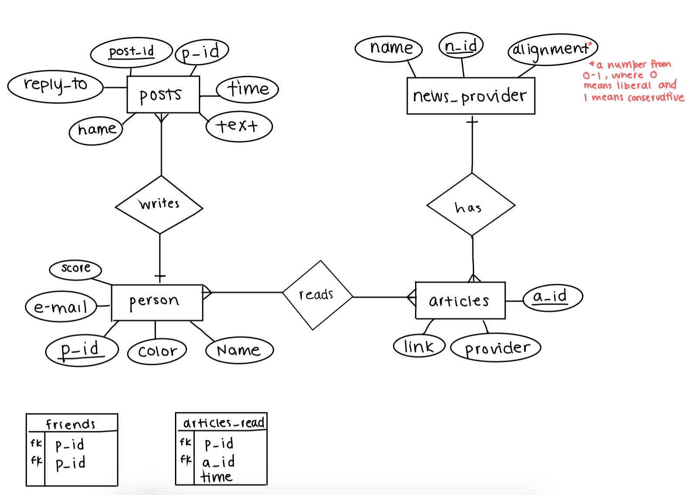

ER Diagram
Initial Design

Abstract
The app we have designed is called Purple, a platform that helps build bridges between groups of people with opposing opinions to encourage productive interactions. In our app, each user has a “color”, which represents the diversity and spectrum of opinions from news sources that they have digested. When a user reads an article from both liberal and conservative sources, their color becomes more purple, whereas if they consistently read opinions from the same viewpoint, their colors becomes more white. A user can also gain points when they are very active and read a lot of sources. The app encourages users to read opinions from both sides in order to make their color purple and earn points to top a leaderboard of users. Our app would scrape articles on different 2020 election topics from a set number of top news platforms, and it would label these articles on as very liberal, liberal, non-partisan, conservative, or very conservative. We would track which articles users read, and accordingly modify their color and points. Our app will also have a forum section where users can write about different issues and articles that they’ve read and engage in conversations with others on the platform.